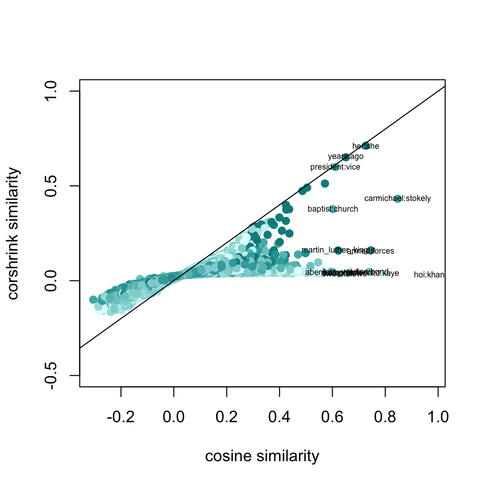
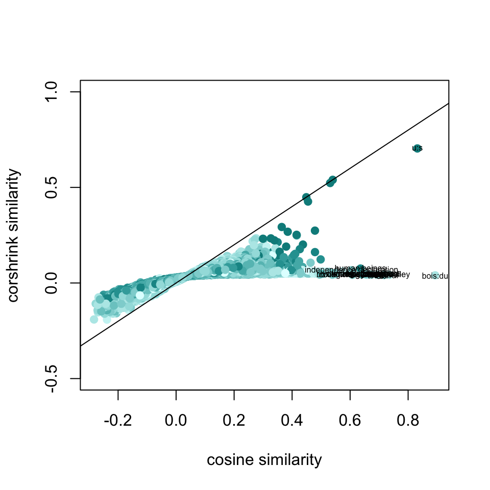

We look at CorShrink similarity measures and corresponding rankings of words and compare them with the empirical similarity and rankings without the CorShrink model. We pick four topic words to focus on - martin luther king, civil rights and then perform bagging on all the different articles.
mat <- get(load("../output/word2vec_Ebony_articles/martin_luther_king_corshrink_articles.rda"))
cor_original <- mat$original
corshrink_mat <- mat$corshrinkword_frequencies_mat <- get(load("../output/word2vec_Ebony/word_frequencies.rda"))
word_presence_absence <- word_frequencies_mat
word_presence_absence[word_presence_absence > 0] = 1matched_word_frequencies <- word_presence_absence[, match(rownames(corshrink_mat), colnames(word_presence_absence))]num_occurrences_words <- colSums(matched_word_frequencies)num_occurrence_matrix <- sapply(num_occurrences_words, function(l) pmin(l, num_occurrences_words))word_pairs <- combn(colnames(cor_original),2)df1 <- data.frame("original" = cor_original[lower.tri(cor_original)],
"corshrink" = corshrink_mat[lower.tri(corshrink_mat)],
"nsamp" = num_occurrence_matrix[lower.tri(num_occurrence_matrix)])
df1$nsamp[which(is.na(df1$nsamp))] = max(df1$nsamp, na.rm = TRUE)
colfunc <- colorRampPalette(c("lightcyan", "darkcyan"))
plot(df1$original, df1$corshrink, bg = 2, col = colfunc(12)[df1$nsamp], pch = 19, cex = 1, xlab = "cosine similarity", ylab = "corshrink similarity", ylim = c(-0.5,1))
abline(0,1)
ids <- which(df1$original > 0.6)
ids2 <- order(df1$original - df1$corshrink, decreasing = TRUE)[1:20]
terms <- paste0(word_pairs[1,ids], ":", word_pairs[2,ids])
terms2 <- paste0(word_pairs[1,ids2], ":", word_pairs[2,ids2])
text(df1$original[ids], df1$corshrink[ids], terms,cex = 0.5)
# sort(apply(corshrink_mat[c("dr_king", "dr_kings", "martin_luther_king"),], 2, mean), decreasing = TRUE)[1:30]
sort(corshrink_mat[c("martin_luther_king"),], decreasing = TRUE)[1:30]## martin_luther_king dr jr
## 1.00000000 0.51226385 0.15883811
## lias murder aggressive
## 0.10548300 0.10545375 0.10082107
## sexual james leader
## 0.09773058 0.09622792 0.09374714
## obesity ralph promises
## 0.09353848 0.09151919 0.08925494
## eventually instances elsie
## 0.08885335 0.08801135 0.08780730
## came wright volunteered
## 0.08779388 0.08756578 0.08711811
## issues friction disillusionment
## 0.08706108 0.08693624 0.08663802
## stanley was collective
## 0.08631494 0.08543104 0.08494168
## directing rev modest
## 0.08422651 0.08416521 0.08295935
## commitment late strengthened
## 0.08293983 0.08221109 0.08151497# sort(apply(cor_original[c("dr_king", "dr_kings", "martin_luther_king"),], 2, mean), decreasing = TRUE)[1:30]
sort(cor_original[c("martin_luther_king"),], decreasing = TRUE)[1:30]## martin_luther_king jr dr
## 1.0000000 0.6225928 0.5717972
## joan folk murder
## 0.3746481 0.3641984 0.3553022
## rev hamilton preaching
## 0.3339917 0.3098486 0.2906492
## funderburk prophet prisoner
## 0.2873818 0.2837923 0.2812508
## ended commitment requested
## 0.2773713 0.2747889 0.2747169
## peace carmichael arrested
## 0.2745798 0.2739417 0.2727740
## wright funeral assassination
## 0.2727241 0.2658360 0.2643171
## late silence disciple
## 0.2607304 0.2555496 0.2534132
## forceful ralph matthew
## 0.2468765 0.2409681 0.2392073
## prominent registration stokely
## 0.2365495 0.2336554 0.2322983mat <- get(load("../output/word2vec_Ebony_articles/civil_rights_corshrink_articles.rda"))
cor_original <- mat$original
corshrink_mat <- mat$corshrinkword_frequencies_mat <- get(load("../output/word2vec_Ebony/word_frequencies.rda"))
word_presence_absence <- word_frequencies_mat
word_presence_absence[word_presence_absence > 0] = 1matched_word_frequencies <- word_presence_absence[, match(rownames(corshrink_mat), colnames(word_presence_absence))]num_occurrences_words <- colSums(matched_word_frequencies)num_occurrence_matrix <- sapply(num_occurrences_words, function(l) pmin(l, num_occurrences_words))word_pairs <- combn(colnames(cor_original),2)df1 <- data.frame("original" = cor_original[lower.tri(cor_original)],
"corshrink" = corshrink_mat[lower.tri(corshrink_mat)],
"nsamp" = num_occurrence_matrix[lower.tri(num_occurrence_matrix)])
df1$nsamp[which(is.na(df1$nsamp))] = max(df1$nsamp, na.rm = TRUE)
colfunc <- colorRampPalette(c("lightcyan", "darkcyan"))
plot(df1$original, df1$corshrink, bg = 2, col = colfunc(12)[df1$nsamp], pch = 19, cex = 1, xlab = "cosine similarity", ylab = "corshrink similarity", ylim = c(-0.5,1))
abline(0,1)
ids <- which(df1$original > 0.6)
ids2 <- order(df1$original - df1$corshrink, decreasing = TRUE)[1:20]
terms <- paste0(word_pairs[1,ids], ":", word_pairs[2,ids])
terms2 <- paste0(word_pairs[1,ids2], ":", word_pairs[2,ids2])
text(df1$original[ids], df1$corshrink[ids], terms,cex = 0.5)
# sort(apply(corshrink_mat[c("civil_rights", "civil", "rights"),], 2, mean), decreasing = TRUE)[1:30]
sort(corshrink_mat[c("civil_rights"),], decreasing = TRUE)[1:30]## civil_rights movement rights territory local
## 1.00000000 0.20102694 0.12197419 0.11622029 0.11144955
## federal troopers false employed council
## 0.11127418 0.10933789 0.10493286 0.10177962 0.09946292
## civil ads extension commitment secondary
## 0.09730129 0.09622320 0.09592596 0.09554585 0.09548535
## state appealed keeping presently wealth
## 0.09541358 0.09518519 0.09510395 0.09351336 0.09347280
## jersey patient actively jack tlie
## 0.09310135 0.09304190 0.09299032 0.09281592 0.09243519
## recognition angry register malveaux blacker
## 0.09216801 0.09210805 0.09169145 0.09069934 0.09047858sort(cor_original[c("civil_rights"),], decreasing = TRUE)[1:30]## civil_rights movement bills legislation
## 1.0000000 0.4373516 0.3148993 0.3142973
## stressed andrew rights selma
## 0.3112209 0.3065878 0.3033718 0.2930615
## involvement workers michael federal
## 0.2930148 0.2906397 0.2866021 0.2800930
## sncc promises recommendations victories
## 0.2798038 0.2796991 0.2784854 0.2654641
## local leaders attorney separatist
## 0.2645271 0.2545618 0.2529366 0.2517812
## cover coalition registration enforcement
## 0.2486383 0.2479788 0.2474150 0.2451814
## medgar presently core commitment
## 0.2433083 0.2429599 0.2404085 0.2389956
## commission strengthened
## 0.2385192 0.2382285sessionInfo()## R version 3.5.0 (2018-04-23)
## Platform: x86_64-apple-darwin15.6.0 (64-bit)
## Running under: macOS Sierra 10.12.6
##
## Matrix products: default
## BLAS: /Library/Frameworks/R.framework/Versions/3.5/Resources/lib/libRblas.0.dylib
## LAPACK: /Library/Frameworks/R.framework/Versions/3.5/Resources/lib/libRlapack.dylib
##
## locale:
## [1] en_US.UTF-8/en_US.UTF-8/en_US.UTF-8/C/en_US.UTF-8/en_US.UTF-8
##
## attached base packages:
## [1] stats graphics grDevices utils datasets methods base
##
## loaded via a namespace (and not attached):
## [1] compiler_3.5.0 backports_1.1.2 magrittr_1.5 rprojroot_1.3-2
## [5] tools_3.5.0 htmltools_0.3.6 yaml_2.1.19 Rcpp_0.12.17
## [9] stringi_1.2.2 rmarkdown_1.9 knitr_1.20 stringr_1.3.1
## [13] digest_0.6.15 evaluate_0.10.1This R Markdown site was created with workflowr